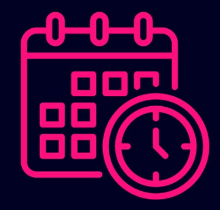

El objetivo principal de este proyecto es diseñar y fabricar muebles utilizando materiales ecológicos para beneficiar a una escuela con recursos limitados. A través del uso de materiales sostenibles y reciclados, buscamos no solo mejorar el entorno de aprendizaje de los estudiantes, proporcionando mobiliario funcional y duradero, sino también fomentar una mayor conciencia ambiental en la comunidad escolar y sus alrededores.
El proyecto contará con la participación activa de voluntarios, quienes colaborarán en el diseño, construcción y acabado de los muebles. Esta dinámica promueve valores como el trabajo en equipo, la responsabilidad social y la creatividad. Paralelamente, se realizarán talleres educativos enfocados en la importancia de la sostenibilidad, el reciclaje y el impacto positivo de las acciones comunitarias sobre el medio ambiente.
Estos talleres estarán dirigidos tanto a estudiantes como a docentes, integrando principios de educación ambiental en el currículo escolar. De este modo, se busca empoderar a los participantes para que adopten prácticas más sostenibles en su vida cotidiana y contribuyan al cuidado del entorno, generando un impacto duradero en la comunidad educativa y en el medio ambiente.
UBICACIÓN
La escuela se encuentra ubicada en el mapa; al hacer clic en el botón que se muestra, podrás ver su ubicación exacta. Se trata de una escuela de educación inicial, a la que asisten un gran número de niños y niñas de la comunidad. Nuestro objetivo es mejorar el entorno educativo mediante la creación de muebles elaborados con materiales ecológicos, proporcionando así un espacio más acogedor y funcional para todos los estudiantes.
INFORME BASICO
En el siguiente enlace podrán encontrar la información básica del proyecto, donde podrán acceder al programa, los materiales utilizados y el proceso de construcción. Este recurso está diseñado para brindar una visión clara y detallada de nuestras actividades y objetivos. ¡Los invitamos a explorar y conocer más sobre nuestra iniciativa!

CRONOGRAMA
En el siguiente enlace podrás visualizar el cronograma del proyecto, que detalla las actividades y tiempos asignados a cada equipo. ¡Te invitamos a revisarlo!
¡Bienvenido a nuestra página! - ¡Disfruta de la experiencia! - ¡Gracias por visitarnos! - TECNOLOGICO DE ESTUDIOS SUPERIORES SAN FELIPE DEL PROGRESO - *GRUPO 102* - FUNDAMENTOS DE PROGRAMACIÓN